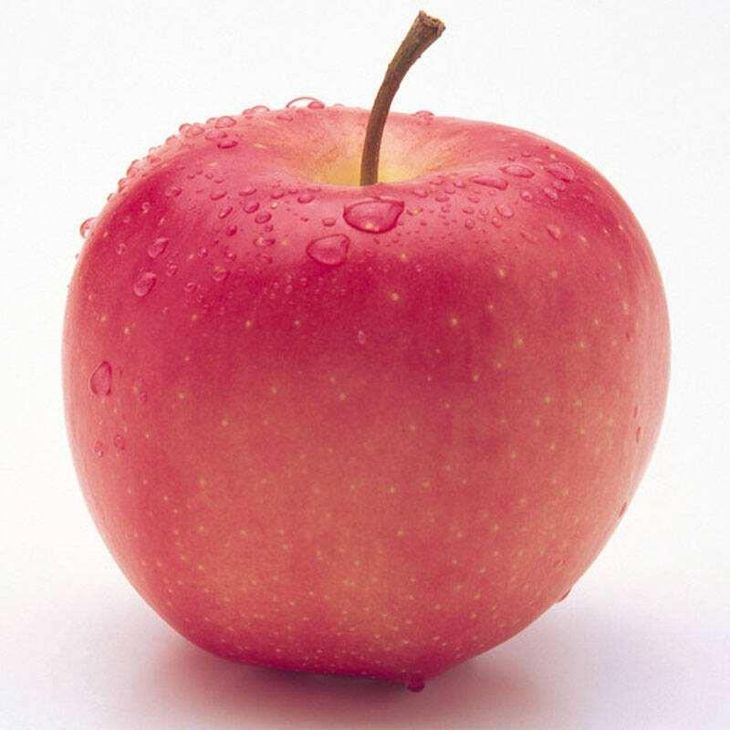
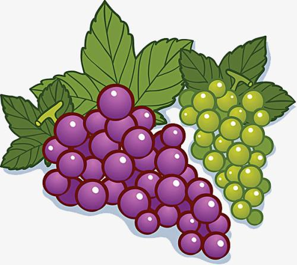
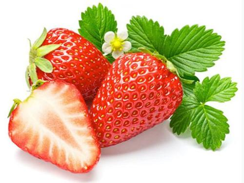

来点水果吗
橘子

橘子的第一个功效是可以开胃理气，因此对于积食、消化不良、泄泻不止的人，如果适当的食用橘子，能够通过其开胃理气的作用，能够改善消化不良的症状，促进脾胃的运化功能。第二个功效是可以生津润肺，因此对于口渴烦躁、咳嗽、咳痰、咳血的人，如果适当的食用橘子，能够有着很好的滋补肺经的作用，进而能够生津润肺，消除上述的症状。第三个功效就是可以为机体提供丰富的维生素C，在清除自由基、抗氧化、抗衰老方面的作用也会非常的明显。
苹果
苹果富含多种营养元素，口感脆嫩，同时还富含的蛋白质、糖分、钙等多种维生素和纤维素的营养成分，可以补充人体的机能所要的营养。苹果可以增强记忆力，经常吃苹果人也会变得聪明。因为苹果不仅含有糖，还含有维生素和看矿物质，这些都是大脑必须的营养成分。重要的是苹果还含有锌元素。苹果还可以预防蛀牙;苹果含有“苹果酚”而且容易在水中溶解，也容易被人体吸收，这种’“苹果酚”对预防蛀牙，有很好的作用，同时还可以抑制过敏，有一定的抗敏感作用。
香蕉
香蕉的营养丰富具有益胃生津，疏通血脉和解酒毒的功效，生活和临床中常用于治疗热病烦渴，咽干口渴，肺燥咳嗽，肠燥便秘，痔疮出血以及饮酒过多等出现的临床表现，都有良好的调理和治疗作用。研究表明，香蕉在人体内能够帮助大脑促进一种化学成分，血清素能够刺激神经系统给人带来愉悦的感觉，还具有镇痛的效应。同时香蕉含有丰富的可溶性纤维，也就是常说的果胶，有助消化，调整胃肠的功能。香蕉中含有一种能够预防胃溃疡病变的化学物质，能够促进胃肠道黏膜细胞的再生和繁殖，起到预防和治疗胃溃疡的作用。同时还具有降胆固醇的功效，针对于胆固醇过高引起的冠心病都有良好的调理作用。同时有助于睡眠，因为含有氨基酸，具有安抚神经的效果，所以可以起到一定的镇静作用。
葡萄
葡萄中的葡萄糖含量非常的丰富，这种糖分能够很快的被人体吸收，转换成能量。所以如果出现了低血糖的情况时候，可以喝一些葡萄汁，能够很好的缓解低血糖的症状。
法国科学家研究发现，葡萄能比阿斯匹林更好地阻止血栓形成，并且能降低人体血清胆固醇水平，降低血小板的凝聚力，对预防心脑血管病有一定作用。
草莓
草莓又叫红莓、洋莓、地莓等，是一种红色的水果。草莓是对蔷薇科草莓属植物的通称，属多年生草本植物。草莓的外观呈心形，鲜美红嫩，果肉多汁，含有特殊的浓郁水果芳香。草莓营养价值高，含丰富维生素C ，有帮助消化的功效，与此同时，草莓还可以巩固齿龈，清新口气，润泽喉部。